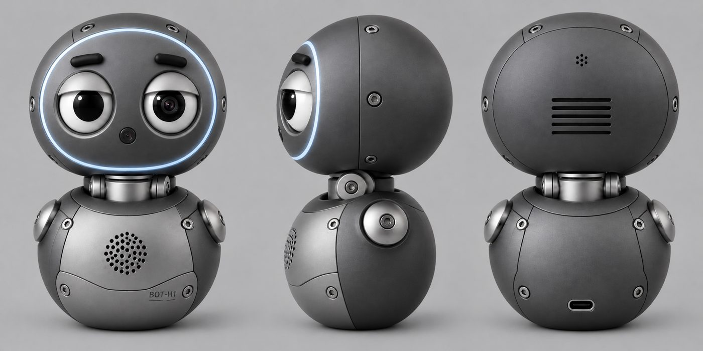
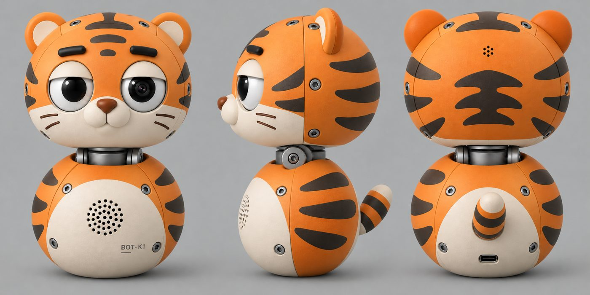

스노봇 공모전 계획
무엇을 내고, 기기들이 어떻게 이어지고, 무엇으로 점수를 받는지 한 장에 정리했습니다.
차량 데이터와 작은 감각 모듈(로봇·센서)을 묶어, 화면 대신 표정과 목소리로 졸음·주차·실내 공기를 챙겨 주고, 차에서 내리면 책상 위 로봇으로 이어지는 Pleos 동반자 앱.
왜 앱만이 아니라 앱 + 로봇인가
차 안에는 이미 글레오 AI(현대차 음성 비서)가 있습니다. "또 하나의 음성 비서"로는 점수를 받기 어려워서, 차가 갖지 못한 것 세 가지로 차별화합니다.
주행 중에는 글자 대신 한눈에 읽히는 표정과 한 문장.
화면을 오래 보지 않아도 된다
CO₂·카메라 같은 센서를 모듈로 더한다.
실내 센서는 고급 트림에만 있다
같은 스노봇이 집 책상에서 이야기를 이어 간다.
차 안 AI는 내리면 끝난다
기기가 이어지는 방식
스노봇은 차와 직접 연결하지 않습니다. 스노봇과 차량 앱이 각자 인터넷으로 같은 클라우드 서버에 붙고, 서버가 둘을 이어 줍니다. AI(듣기·생각하기·말하기)도 서버에서 돕니다.
방법 1 · 프로토타입 — 스노봇이 인터넷에 직접
| 장소 | 스노봇 인터넷 | 대화 시작 |
|---|---|---|
| 집 (책상) | 집 Wi-Fi | 스노봇에게 말하기 (호출어 또는 머리 터치) |
| 차 안 | 폰 핫스팟 (차 Wi-Fi가 있으면 그것도) | "글레오, 스노봇한테 …" · 스노봇에게 직접 · 앱 버튼 |
| 밖 (캠핑 등) | 폰 핫스팟 | 집과 같음 |
| 인터넷 없음 | — | 표정·고개만 움직임 (오프라인 모드) |
폰 핫스팟에 붙으면 폰이 공유기 역할을 해서 폰의 LTE/5G로 인터넷이 됩니다. 스노봇 보드는 2.4GHz Wi-Fi만 되므로 아이폰은 "호환성 최대화"를 켭니다. 블루투스 직접 연결은 에뮬레이터가 지원하지 않아 나중 선택지로 둡니다.
연결 방법 두 가지
스노봇이 인터넷에 직접 붙는다 (집 Wi-Fi 또는 폰 핫스팟). 차량 앱은 차량 통신망으로 같은 서버에.
에뮬레이터로 시연 가능. 지하·터널에서는 끊긴다
스노봇이 우리 앱(차량·폰)에 블루투스로 직접 붙고, 앱의 인터넷을 빌린다. 차량 앱이 모듈 허브.
핫스팟 불필요, 지하에서도 차와 연결 유지. 블루투스 허용 확인 필요
방법 2 · 최종 목표 — 스노봇이 우리 앱에 직접
| 장소 | 우선 | 대체 |
|---|---|---|
| 집 | 방법 1 (집 Wi-Fi) | 폰 앱 (방법 2) |
| 차 | 방법 2 (차량 앱 블루투스) | 폰 핫스팟 (방법 1) |
| 밖 | 방법 2 (폰 앱) | 폰 핫스팟 (방법 1) |
방법 2에서 차 안 대화는 차의 마이크·스피커로 하고, 스노봇은 표정과 센서만 맡습니다. 블루투스로는 작은 신호만 오가서 넉넉하고, 차 음악과 목소리가 겹치지 않습니다. 시동을 끄면 차량 앱이 멈추므로 스노봇은 폰 앱이나 Wi-Fi로 자동으로 넘어갑니다. 메시지 형식은 하나, 전송 방법만 바꿉니다.
방법 1에서 방법 2로 가는 순서
차 안 AI도 쓸 수 있게
| 상황 | 듣기·말하기 | 생각하기 |
|---|---|---|
| 인터넷 있음 | 클라우드 또는 차 음성 엔진 | 클라우드 LLM (스노봇 말투) |
| "글레오, 스노봇한테…" | 글레오 | 글레오가 판단, 우리 앱은 데이터·기능 제공 |
| 인터넷 없음 (지하·터널) | 차 안 음성 엔진 문서 확인 | 차량 앱 규칙 — 주차 위치 안내, 졸음 경고 |
| 향후 차량 LLM 공개 시 | 차 안 음성 엔진 | 차량 LLM으로 교체 문의 |
| 폰 앱 경유 (밖·집) | 폰 안 음성 인식·합성 | 폰 온디바이스 LLM — 아이폰 Foundation Models, 안드로이드 Gemini Nano(일부 기기) 기기별 시험 |
앱이 글레오에게 질문을 보내 답을 받는 기능은 문서에 없습니다. 글레오가 우리 앱을 부르는 방식만 있습니다. 글레오가 차 안에서 도는지는 설명회에서 묻습니다.
서버는 "내 스노봇"과 "내 차"를 어떻게 아나
서버를 거치면 느리지 않나
| 항목 | 정도 |
|---|---|
| 차량 데이터 양 | 1분에 약 0.6KB 추정 — 대화 음성 한 번(50~100KB)보다 훨씬 작다 |
| 기기 → 서버 → 기기 | 왕복 약 0.006초 실측 (프로토타입 서버, 유선 기준) — 무선 구간이 더해져도 AI 대답 2~3초에 묻힌다 |
| 어차피 가는 길 | 대화 AI가 클라우드에 있어 목소리는 원래 서버로 간다 |
| 약점 | 지하주차장·터널에서 전파가 끊기면 둘 다 끊긴다 |
그래서 같은 차 안에서는 가까우면 직접 연결을 먼저 시도하고(같은 폰 핫스팟 안에서 직접, 또는 블루투스), 안 되면 클라우드로 갑니다. 전파가 없으면 스노봇은 미리 정한 표정으로 반응하고, 주차 위치는 차량 앱이 갖고 있다가 연결되면 올립니다. 스노봇에게는 차량 데이터 자체가 아니라 서버가 판단한 결과(표정·할 말)만 갑니다.
말하고 대답하는 순서
집이든 차든 같습니다. 목표는 말이 끝나고 3초 안에 첫 소리.
시간은 목표치입니다. AI 업체별 응답 시간을 재서 확정합니다.
기능 여섯 가지
앱 화면 속 가상 스노봇(+ 실물 스노봇)이 눈꺼풀·눈썹·고개로 상태를 알린다.
주행 규제 상태에 맞춰 화면을 자동으로 줄인다
연속 주행 시간 + 실내 CO₂로 휴식을 권하고, 쉼터를 경유지로 바로 추가.
차량 주행 기록 + 내비 경유지 = 차에서만 되는 조합
시동 끄기 직전 위치 + 모듈 카메라가 기둥 글자("B3 C-12")를 읽어 저장.
폰보다 정확한 차량 위치·기어 신호
"글레오, 스노봇한테 주차 어디 했는지 물어봐" — 글레오가 스노봇 기능을 부른다.
Gleo Interface로 차 음성 비서와 직접 연결
모듈이 자기 기능을 알려 주면 앱이 맞는 기능을 켠다. 모듈 없이도 동작.
하위 트림에 감지 기능을 더한다
같은 스노봇이 집 책상에서 대화·알림을 이어 간다.
차량 앱과 로봇이 같은 계정으로 묶인다
쓰이는 장면
- 2시간째 운전, CO₂ 1,500ppm
- 스노봇 눈꺼풀이 반쯤 내려감 — "다음 쉼터 12km예요"
- "응, 넣어 줘" → 경유지 추가
- 쉼터 도착하면 스트레칭 권유
- 기어 P, 시동 끄기 직전 위치 저장
- 카메라가 기둥 "B3 C-12" 읽음
- "차 어디 있어?" → "지하 3층 C-12예요"
- 다음 날 집 스노봇도 기억
- "글레오, 스노봇 기분 어때?"
- 글레오가 스노봇 기능 호출
- 스노봇이 웃으며 오늘 주행 요약을 한 문장으로
Pleos SDK가 쓰이는 곳
심사 기준 "기술 활용성"은 Pleos SDK를 핵심 기능에 썼는지를 봅니다.
| SDK | 쓰는 곳 | 지금 상태 |
|---|---|---|
| Vehicle (조회) | 주행 시간·거리 → 졸음, 공조 상태 → 공기질, 배터리, 차량 경고 | 신청 없이 사용 |
| 안드로이드 차량 표준 API | 속도·기어 → 주행·정차·주차 판단, 주행 규제 → 화면 줄이기 | 표준 |
| NaviHelper | 쉼터·충전소 경유지 추가, 남은 거리 | 신청 없이 사용 |
| FusedLocation | 주차 위치 저장, 집 도착 알림 | 준비 중 표시 — 확인 |
| 음성 인식·합성 | 모듈이 없을 때 차 스피커·마이크로 대화 | 준비 중 표시 — 확인 |
| Gleo Interface | 글레오가 부를 스노봇 기능 등록 | 에뮬레이터 시험 — 문의 |
사업성 숫자
심사 기준 "사업성"은 타깃 고객, 예상 MAU, 재방문율, 확대 계획을 요구합니다. 아래 숫자 대부분은 가정입니다.
| 국내 기준 | 2027년 말 | 2030년 | 근거 |
|---|---|---|---|
| Pleos 적용 차량 누적 | 30만 대 | 200만 대 | 가정 국내 판매 연 약 125만 대, 2030년 글로벌 2,000만 대 목표 |
| 앱 설치율 | 5% | 5% | 가정 |
| 설치자 중 매달 쓰는 비율 | 40% | 40% | 목표 |
| 예상 MAU | 약 6,000 | 약 40,000 | 위 셋을 곱함 |
| 30일 재방문율 | 35% 이상 | 목표 출퇴근마다 자동으로 나타나는 기능 | |
| AI 비용 / 사용자 / 월 | 약 0.1~2달러 | 추정 하루 1~10번 대화, 2025년 공개 단가 | |
앱은 무료. 모듈 판매(스노봇·카메라 큐브·센서), 선택 구독(AI 대화 무제한·집 연동), 모듈 플랫폼 수수료, 브랜드 캐릭터 모듈.
Pleos Connect는 2026년 5월 그랜저부터(첫 달 1만 대 이상), 아반떼·투싼으로 확대. 2025년 국내 판매 현대 71.3만·기아 약 54.6만 대.
기아 적용은 2027년부터로 보도(미확정)
브랜드 캐릭터 봇
속 기구는 스노봇과 똑같고 겉 껍데기만 바꾼 캐릭터 모듈입니다. 기획서 사업 모델의 확장 예시.


아틀라스와 호랑이는 실제 브랜드 자산이라 그림에 로고·상표를 넣지 않았습니다. 기획서에는 실제 이름 없이 "제휴 전제 확장 예시"로만 쓰는 것을 권합니다.
남은 일정
지금 정할 것
- 기획서 초안의 방향과 표현이 괜찮은지
- 브랜드 캐릭터 봇을 기획서에 넣을지 (넣는다면 "예시 시안"으로)
- 사무국에 문의 메일을 보낼지, 설명회에서 물어볼지
자세한 원문: docs/pleos/01-proposal.md(기획서 초안) · docs/07-communication-ai.md(통신·AI) · docs/pleos/04-pleos-sdk.md(SDK) · docs/08-brand-character-bots.md(캐릭터 봇)